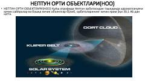

NONeptun orti obyektlari va Koyper belbog'i haqida ilmiy ma'lumotlar.
Ushbu qo'llanma Neptun orti obyektlari (NOO), ularning kelib chiqishi va Koyper belbog'i haqidagi ilmiy ma'lumotlarni o'z ichiga oladi. Unda ushbu osmon jismlarining kashf etilish tarixi va ularning tarkibi bo'yicha asosiy nazariyalar yoritilgan.